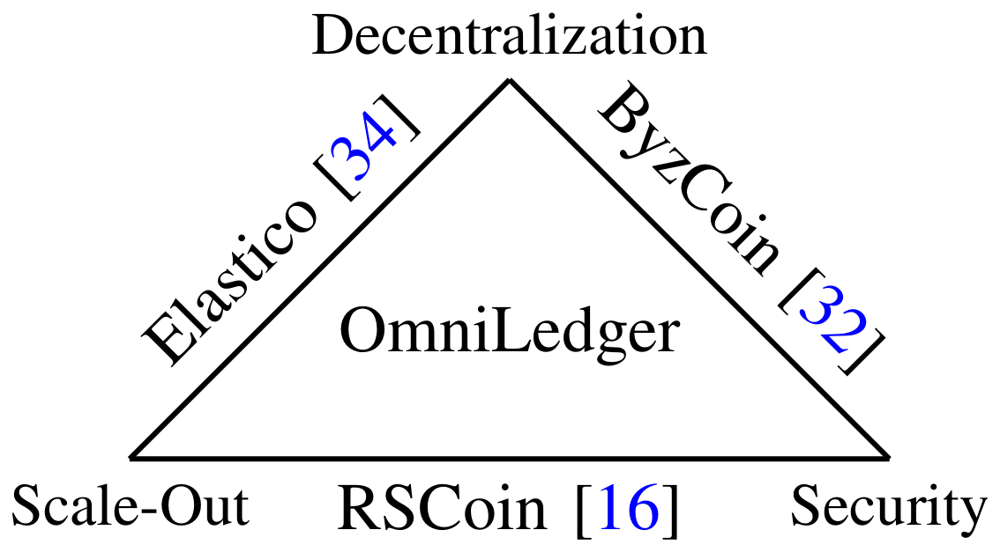

ความท้าทายหลัก 3 ประการที่ผู้เขียนตั้งไว้ (Section I)
1
เลือก validator ที่เป็นตัวแทนทางสถิติ
สุ่มกลุ่ม validator จากระบบ permissionless โดยทนต่อ Sybil attack ผ่าน Proof-of-Work หรือ Proof-of-Stake
2
ไม่ให้ shard ใดถูกยึดตลอดอายุระบบ
shard ต้องใหญ่พอ และต้องสร้างใหม่เป็นระยะด้วยค่าสุ่มที่ผู้โจมตีบิดเบือนไม่ได้ (bias-resistant)
3
ธุรกรรมข้าม shard ต้องเป็น atomic
สำเร็จทั้งหมดหรือยกเลิกทั้งหมด เงินต้องไม่ถูกใช้ซ้ำและไม่ถูกล็อกค้างถาวร
แบบจำลองผู้โจมตี (Threat Model, Section III)
- validator ที่ไม่ซื่อสัตย์มีได้ไม่เกิน 25% (n = 4f)
- ผู้โจมตีปรับตัวได้ช้าในระดับ epoch (mildly adaptive)
- ช่องทางสื่อสารระหว่าง validator ที่ซื่อสัตย์เป็นแบบ synchronous

ภาพที่ 1: ระบบเดิมได้เพียงสองในสามด้าน (Fig. 1 ของบทความ)
- Elastico: ขยายได้และกระจายศูนย์ แต่ shard เล็ก (100 validator) ล้มเหลว 2.76% ต่อ shard ต่อบล็อกที่ผู้โจมตี 25%
- ByzCoin: กระจายศูนย์และปลอดภัย แต่ความจุรวมไม่เพิ่มตามจำนวน validator
- RSCoin: ขยายได้และปลอดภัย แต่สละการกระจายศูนย์แบบ permissionless
1 ชม.
เวลาก่อนล้มเหลวของ Elastico (Table IV)
600 s
latency ของ Bitcoin (Table IV)
4,000
tx/s ค่าเฉลี่ยของ Visa ที่บทความใช้เทียบ